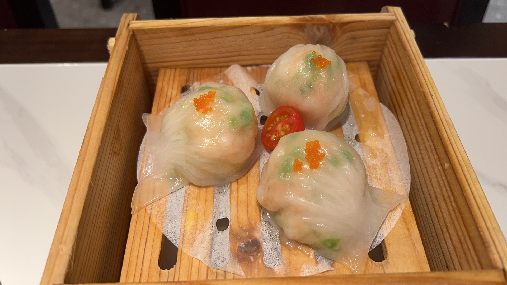
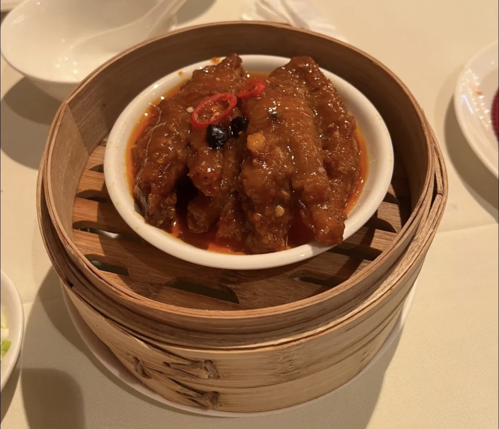
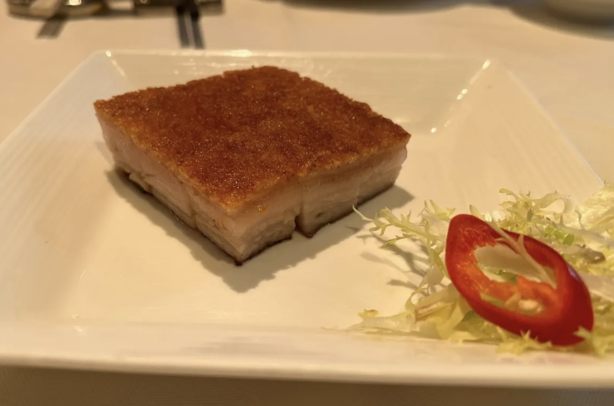
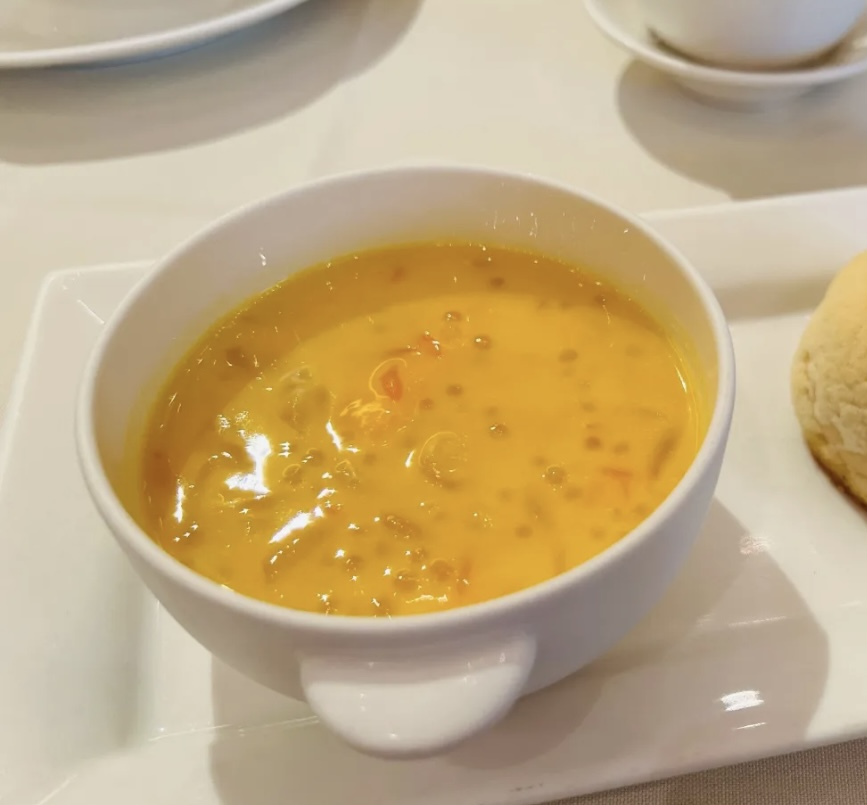

Char Siew Pork
Shrimp Dumpling
Hong Kong Style Chicken Feet
Shrimp dumpling is a special snack in Guangzhou, Guangdong Province, belonging to Cantonese cuisine. The half-moon-shaped and spider belly have twelve pleats, and the fillings are shrimp, meat, and bamboo shoots. The taste is delicious, smooth and delicious. Development of shrimp dumplings: black truffle shrimp dumplings, typhoon shelter shrimp dumplings, Gongfu soup shrimp dumplings, crystal shrimp dumplings, and mother-in-law shrimp dumplings.
Char Siew Pork is a very representative dish in Cantonese cuisine. Barbecue pork is a type of barbecue meat, which refers to pork and poultry meat that has passed the veterinary inspection, and is added with soy sauce, salt, sugar, wine and other seasonings. It is a kind of cooked meat product, which is a kind of Cantonese roasted meat. Mostly red, made of lean meat, slightly sweet. It is to hang the marinated lean pork on a special fork and grill it in the oven. A good barbecued pork should be tender, juicy, brightly colored and full of flavor. Among them, the balance of fat and lean meat is the best, which is called "semi-fat and lean".
Rock Sugar Pork Belly
Poplar Nectar